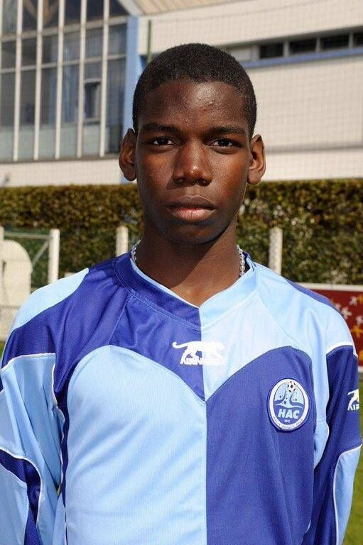
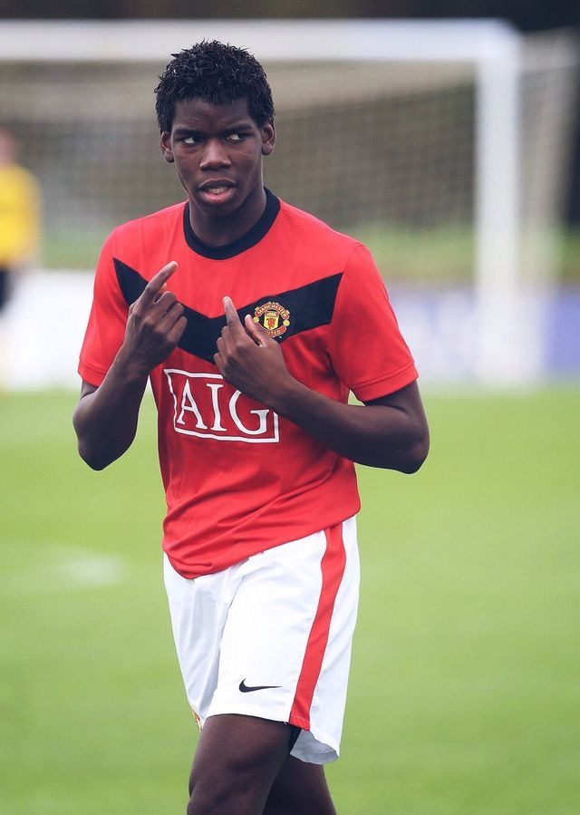
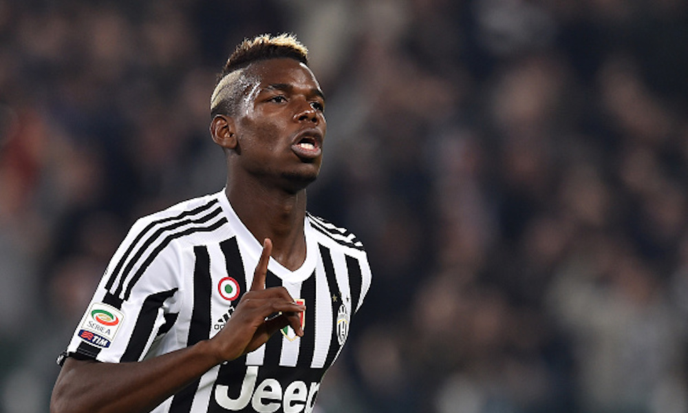
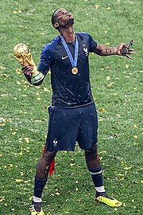

CLUBES PRINCIPALES POR LOS QUE HA PASADO PAUL POGBA
| NOMBRE | DESCRIPCION | IMAGEN |
|---|
| Le Havre Athletic Club |
Después de una temporada en el club US Torcy, llegó al club profesional Le Havre. En su segunda temporada en el club, capitaneó al equipo sub-16 para la fase final del campeonato liguero. Le Havre terminó segundo en la fase final solo detrás del Racing Club de Lens. Pogba se estableció como internacional en las categorías menores. Sus actuaciones nacionales e internacionales, llamaron la atención del Arsenal y de la Juventus de Turín. Fuente:https://es.wikipedia.org/wiki/Paul_Pogba |
 |
| Manchester United Football Club |
Pogba completó su transferencia el 7 de octubre de 2009 y debutó tres días después en la categoría sub-18 en la derrota 2-1 contra el Crewe Alexandra. En la campaña 2009-10 de la categoría finalizó con 21 participaciones y 7 goles. El equipo terminó primero en su grupo, pero perdió con Arsenal 5-3 en tanda de penaltis en las semifinales.11 En la temporada 2010-11, Pogba se mantuvo en la categoría sub-18 por tres meses. Ya en noviembre de 2010 fue llamado al equipo de reserva y debutó el 2 de noviembre en la victoria 3-1 sobre el Bolton Wanderers. Continuó la temporada en la sub-18, ayudando al equipo a alcanzar el campeonato de la FA Cup juvenil ante el Sheffield United. El 19 de septiembre fue llamado por primera vez al equipo mayor para participar en la Copa de la Liga de Inglaterra ante el Leeds United. Su debut en la Premier League se produjo el 31 de enero de 2011 ante el Stoke City. Fuente:https://es.wikipedia.org/wiki/Paul_Pogba |
 |
| Juventus Football Club |
El 22 de septiembre Pogba debutó en la Serie A con los 'bianconeros' disputando los 90 minutos ante el ChievoVerona.22 El 2 de octubre debutó en la Liga de Campeones de la UEFA, en el empate en casa a un gol contra el Shajtar Donetsk. Su primer tanto en el equipo italiano sería el 20 de octubre en la victoria 2-0 contra el Napoli. En diciembre de 2013, Pogba ganó el Premio Golden Boy al mejor jugador joven en Europa. "Haber ganado la liga por primera vez, alcanzar los cuartos de final en la Liga de Campeones, ganar el Mundial sub-20 y ser promovido al primer equipo por Didier Deschamps, 2013, realmente fue un año de oro para mí". El 20 de febrero de 2014, Pogba anotó su primer gol en competiciones UEFA en la victoria 2-0 al Trabzonspor en el partido de ida de los dieciseisavos de final de la UEFA Europa League. Pogba confirmó ser un jugador clave del club italiano. Fuente:https://es.wikipedia.org/wiki/Paul_Pogba |
 |
| Federación Francesa de Fútbol |
Ha sido internacional con la selección de fútbol de Francia en las categorías sub-16, sub-17, sub-18, sub-19 y absoluta. Su debut se produjo el 23 de septiembre de 2008 en un encuentro ante la selección de Gales. Pogba fue despojado de la capitanía del equipo e hizo su debut con el seleccionado sub-17 el 13 de febrero de 2010 ante Inglaterra. Con el equipo sub-18 debutó el 27 de octubre de 2010. Finalmente con el seleccionado sub-19 debutó en un partido amistoso contra Italia. Con la selección absoluta debutó el 22 de marzo de 2013 en la victoria por 3-1 sobre Georgia. El 13 de mayo de 2014, el entrenador de la selección francesa Didier Deschamps incluyó a Pogba en la lista final de 23 jugadores que representaron a Francia en la Copa Mundial de 2014 donde tuvo una destacada actuación y fue elegido como mejor jugador joven del torneo. El 17 de mayo de 2018, el seleccionador Didier Deschamps lo incluyó en la lista de 23 para el Mundial. El 15 de julio de 2018, se consagró campeón del mundo con la selección de Francia, anotando uno de los cuatro goles que les dio la victoria sobre Croacia por 4 a 2. Fuente:https://es.wikipedia.org/wiki/Paul_Pogba |
 |